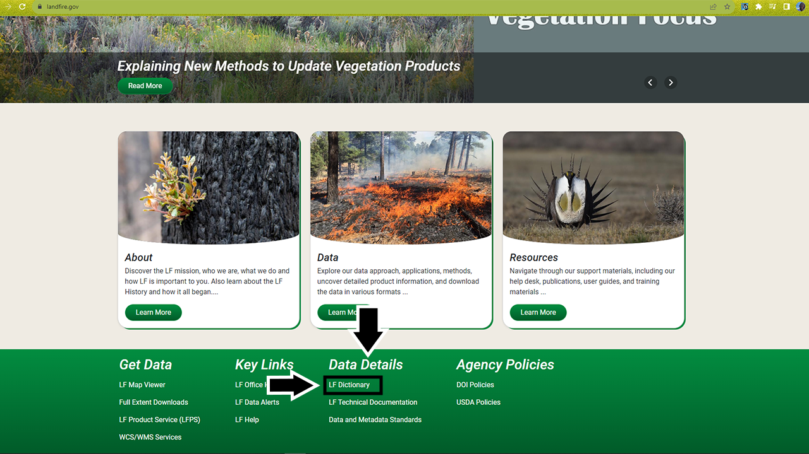
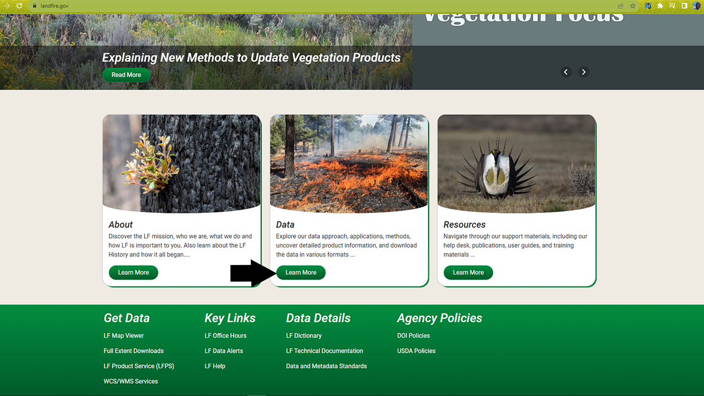
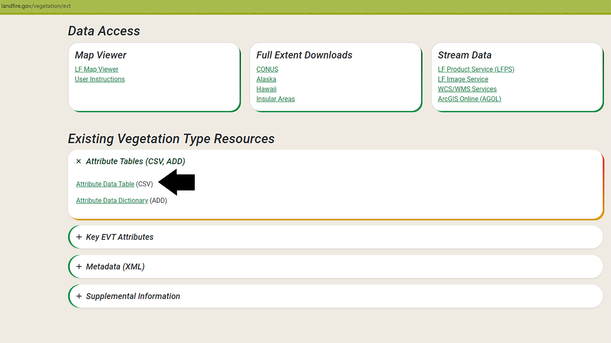
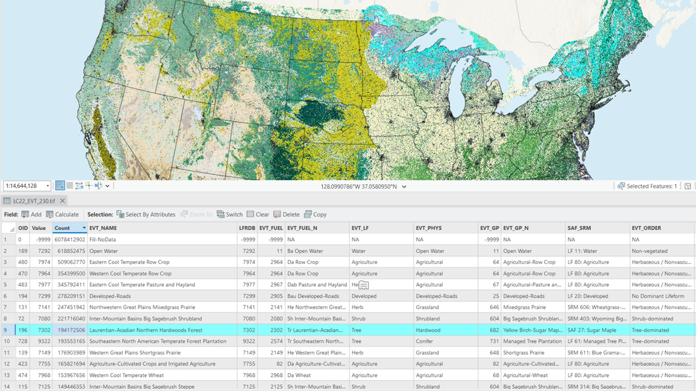

Explore LANDFIRE spatial data
What you will find in this section
How to explore the attribute tables of LANDFIRE datasets:
From the LANDFIRE Program website
In the .csv files for each layer
With ArcGIS Pro
Why explore the attributes of LANDFIRE data?
Exploring the attributes of any dataset is a fundamental step in the data analysis process. It lays the foundation for accurate analyses, informed decision-making, and successful outcomes in various fields, from scientific research to business intelligence.
Here are three main reasons to understand the attributes of LANDFIRE data before any analysis in GIS or R:
Data Familiarity: Exploring attributes provides a deep understanding of the dataset’s structure, format, and content. This familiarity is essential for making informed decisions about data manipulation, analysis, and visualization.
Understanding Data Quality: Examining data attributes helps assess the quality and reliability of the dataset. Identifying missing or inaccurate information early on can prevent errors in analyses and decision-making processes.
Effective Data Visualization: Exploring attributes aids in creating effective data visualizations. Understanding the range and distribution of variables helps you choose appropriate visualization techniques that convey the intended message and insights.
Many LANDFIRE datasets allow for analysis and display at various levels of specificity and on various different attributes. We encourage you to explore all the attributes of the data before getting started with analysis and mapping. We have provided some examples of mapping on different attributes later in this site when we discuss the individual datasets.
How to explore the attributes of LANDFIRE datasets
There are a few ways to view the attribute tables of any LANDFIRE dataset.
From the LANDFIRE Program website
💡 Screenshots of the process are included below the written instructions for those who find them useful.
The LANDFIRE Program website is the most comprehensive resource for exploring and understanding the suite of LANDFIRE data. Here we highlight where you can find information and resources related to attributes of some key datasets.
Navigate to the LANDFIRE Program website.
You will find yourself on the main page, where you’ll see several icons across the top, as well as three images in the main body of the page and links to several key resources at the bottom.
One useful link for exploring the attributes of each dataset is the LANDFIRE Data Dictionary, under the Data Details heading at the bottom of the page. The data dictionary provides a comprehensive look at LANDFIRE data and serves as a guide to direct users to information about products, attributes, and metadata.
- Within the data dictionary table of contents, click the layer you’re interested in and jump to the section of the document that shows the attributes and descriptions of that layer
Another way to explore datasets and their attributes is to navigate to the layer via the buttons across the top of the page. Most of the datasets we will discuss on this website can be found underneath the Vegetation category. If you need a refresher, check out which datasets are available where in the What is LANDFIRE? section of this site.
On each individual product page, you will find a section on Key Attributes, which provides more information on the attributes of that specific dataset. You can download a .csv file attribute table for the most recent LANDFIRE dataset there (see ‘With the .csv file for each layer’ section below).
Screenshots for where to find attributes on the LANDFIRE website



With the .csv file that comes with each layer
💡 Screenshots of the process are included below the written instructions for those who find them useful.
Whenever you download a LANDFIRE dataset, it will be packaged in a .zip file that includes not only the spatial data in .tif format, but also general metadata, spatial metadata, and a .csv data file. .csv stands for Comma Separated Values and is a convenient way to display and work with the attributes of a spatial data layer in a non-spatial way (R, Excel, etc.). This enables you to examine your data and understand landscape trends without even opening GIS software. It also helps you understand the attributes you may want to map and explore spatially.
The .csv files can be found on the individual dataset web pages under the Attribute Tables (CSV, ADD) sections at the bottom of each product page.
Exploring the .csv files of a LANDFIRE spatial layer
Navigate to the folder where your spatial dataset is stored.
Your data may be stored as a .zip file. Unzip the files and store them in a meaningful location so you can find and access them throughout this tutorial.
Within the dataset folder or zip file, you should have a folder titled CSV_Data. Click on this folder to access the .csv file.
Double click on the Microsoft Excel Comma Separated Values file to open it in Microsoft Excel.
If you don’t use Microsoft Excel or you aren’t working in a Microsoft Windows environment, this file may not default to opening in Excel. In that case, right click, navigate to ‘open with’, and choose the spreadsheet program of your choice to view the file.
- Here you can explore the attributes and values of the datasets. We recommend using the metadata and/or data dictionary as a guide to better understand what each of the field names means and what data are being reported under that field.
Screenshots for where to find the .csv file



Within ArcGIS Pro
💡 Screenshots of the process are included below the written instructions for those who find them useful.
You can also use ArcGIS Pro to view the attribute tables of each dataset in tandem with the spatial data. This may provide additional benefit, as you can select attributes of interest (a particular vegetation type, for example) and ArcGIS Pro will highlight where that attribute appears in the landscape. You can also use ArcGIS Pro’s built-in tools to generate basic summary statistics that will allow you to explore the data.
Exploring attribute tables in ArcGIS Pro
Right click on the layer name in the table of contents to open the layer properties menu, then browse to ‘Attribute Table’. This option can be found near the top of the menu.
- This will open the attribute table for the layer. Here you can examine and edit the attributes of the layer.
To explore where a particular attribute value occurs on the landscape, click on the corresponding row number in the attribute table and ArcGIS Pro will highlight those pixels in the map display..
Be sure to use the selection tools in the Map section at the top of the ribbon bar to unselect any rows before doing any data processing. By default, ArcGIS Pro will run all tools on only the selected data. You may end up needing to re-run tools or processes because they were only run on a subset of your full area of interest.
Screenshots for finding and working with the attribute tables in ArcGIS Pro



Helpful Resources
- Use the LANDFIRE Data Dictionary to help understand and locate LANDFIRE information.
Still have questions? LANDFIRE is here to help.
Ask the LANDFIRE Helpdesk (email link).
Search and subscribe to the LANDFIRE YouTube Channel (see tutorials, Office Hours, quick demonstrations).
Join an Office Hour (monthly meeting with open format Q & A with LANDFIRE experts).
Schedule a meeting (email link) with TNC’s LANDFIRE Team.